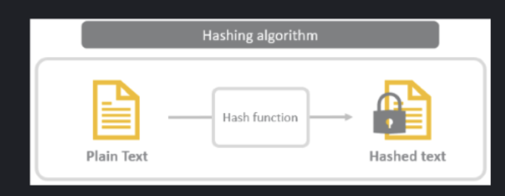

Q15 of 19
As depicted in the picture below, a hash function lies at the heart of a hashing algorithm. A hash function takes in data at a fixed length called blocks. 
If a message is 1024 bit in length, how many blocks will be processed by the SHA-1 algorithm?
Enter the answer between 1 and 10.